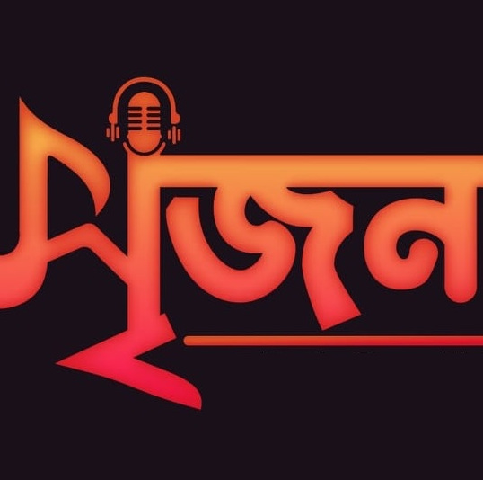

Toggle navigation
আলোময় সঙ্গীত
Home
সর্বশেষ সংযুক্তি
সব প্লেলিস্ট
অনুরোধের গান
গানের অনুরোধ
ফেসবুক
কাজ করুন গানের ছন্দে
সুস্থ সংস্কৃতি চর্চার দীপ্ত প্রত্যয়
পছন্দের প্লেলিস্ট খুঁজে নিন
সর্বশেষ সংযুক্তি
সর্বশেষ সংযুক্তি:
•
হামদ
•
শহিদী গান
•
ঈদের গান (সাইমুম শিল্পীগোষ্ঠী)
•
আপন ঘর (রোকনুজ্জামান)
•
বর্ণমালার গান (অনুপম শিল্পীগোষ্ঠী)
•
দিশা (বিকল্প সাহিত্য ও সাংস্কৃতিক সংসদ)
•
সোনার নোলক (বিকল্প সাহিত্য ও সাংস্কৃতিক সংসদ)
•
আলোর প্রভা (সাইমুম)
•
গানের পাখি (হাসনা হেনা আফরীন)
•
বাজে দুঃখের বীন (রোকনুজ্জামান)
•
বন্ধন (সাইমুম ও পাঞ্জেরি শিল্পীগোষ্ঠী)
•
বিকেলের সৈকতে (প্রবাহ সাহিত্য সাংস্কৃতিক সংসদ)
•
শিল্পীর তুলি (প্রবাহ সাহিত্য সাংস্কৃতিক সংসদ)
•
আঁখি জলে ভাসি (প্রত্যয় শিল্পি গোষ্ঠী)
•
কামিনী ফুটেছে বনে (মশিউর রহমান)
বাছাইকৃত গান
প্রতীতি - ০১
মতিউর রহমান মল্লিক
চলুন শোনা যাক
তোমাকেই শুধু মনে হয়
সাইমুম শিল্পীগোষ্ঠী
চলুন শোনা যাক
কাবার পথিক
প্রবাহ সাহিত্য সাংস্কৃতিক সংসদ
চলুন শোনা যাক
জীবন পাখি যায় উড়ে

সৃজন সাহিত্য সাংস্কৃতিক সংসদ
চলুন শোনা যাক
এ সপ্তাহের সেরা গান
Your browser does not support the audio element.